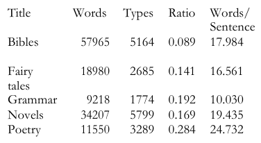
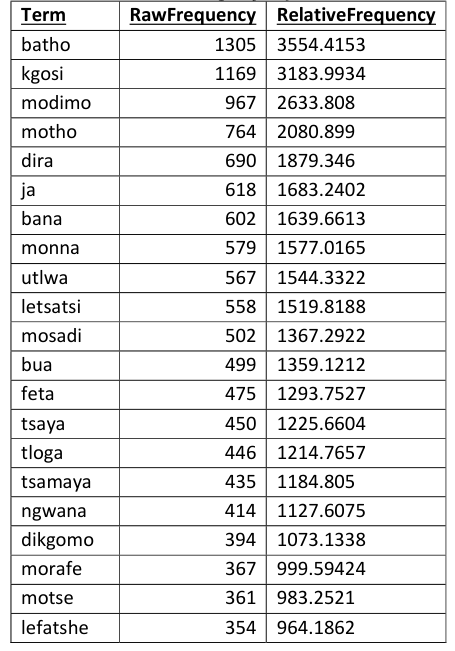
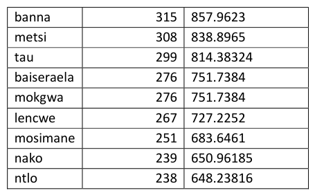
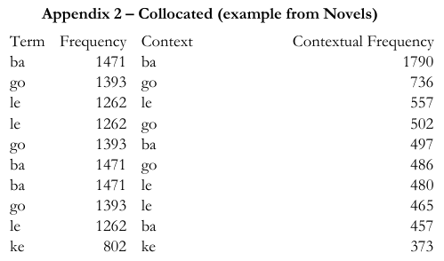
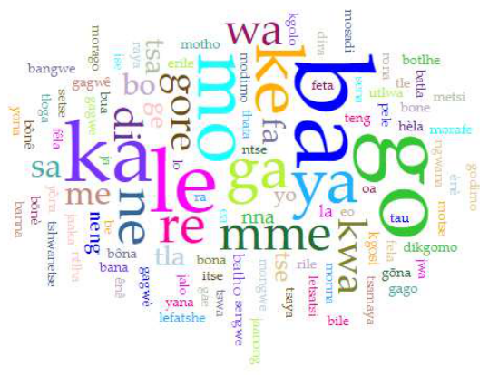

RAIL 2021Tafsiri ya mashine
Matumizi mapya ya vitabu vya zamani: Maelezo ya korasi za kidijitali zilizojengwa kutoka mkusanyiko wa lugha ya Setswana katika Mkusanyiko wa Kiafrika wa WITS Cullen
Tafsiri ya mashine, haijakaguliwa na binadamu. Makala asili ndiyo toleo la rejeo; sentensi zilizopigiwa mstari ni zile ambazo ukaguzi wa kiotomatiki haukuwa na uhakika nazo.
Proceedings of the 2nd Workshop on Resources for African Indigenous Languages (RAIL 2021), Journal of the Digital Humanities Association of Southern Africa.
Tafsiri ya Ernst van Gassen (Arktos AI Lab), yenye leseni CC BY-SA 4.0 kama makala asili. Matumizi tena yanaruhusiwa kwa kutaja mwandishi; shiriki marekebisho kwa masharti yale yale. Waandishi asili hawajakagua wala kuidhinisha tafsiri hii.
Maandishi matupu ya kutumia tena, pamoja na leseni yake: Kiswahili · LESENI
Taasisi
Rahlao, Malebogo
The University of the Witwatersrand, Johannesburg
Lewin, Nina
The University of the Witwatersrand, Johannesburg
Surtee, Taariq
The University of the Witwatersrand, Johannesburg
Anwani za barua pepe zimeondolewa kwa sababu za faragha. Zinapatikana katika PDF asilia.
Muhtasari
Gazeti hili lilieleza juu ya Corpus ya vitabu 104. Vitabu viliorodheshwa katika metadata sanifu ya maktaba na kumbukumbu: Dublin core. Sehemu ya chini ilikuwa digitalized na kusafishwa. Vitabu kisha viligawanywa katika vikundi vidogo vitano na kulinganishwa kati yao na Korasi nzima. Tulikisia kwamba Corpus kwa ujumla ingeweza kutumiwa kama kitabu cha kawaida cha kuandikisha lugha. Mifano mingine pia inatolewa ya sifa za seti za aina. Makala hii inalenga kuwatambulisha watafiti wa uchakataji wa lugha asilia (NLP) Korasi na kuitoa kwa utafiti zaidi.
1 Utangulizi
"Kushindwa kuwasiliana na binadamu katika lugha yao wenyewe kunaweza kuwa mojawapo ya vizuizi muhimu zaidi katika kupitisha teknolojia ya habari na mawasiliano katika ulimwengu wa tatu na kuziba pengo la kidijitali" (Getao & Evans, 2000: 128).
Wakati huohuo, NLP ni mojawapo ya matatizo tata zaidi ya hesabu ambayo yamewakabili wanasayansi wa kompyuta. Wito wa hatua za kuunda rasilimali kwa lugha hizi, ikiwezekana kwa njia iliyoratibiwa na ya kimfumo, umejibiwa katika makala haya. Watafiti wa NLP katika Kiingereza wamekuwa na faida ya Corpora nyingi kwa utafiti na upimaji. Katika makala hii, tunawasilisha mkusanyiko wa lugha ya Kiafrika: kikusanyiko kidogo cha Setswana, kwa watafiti wa NLP wa Lugha za Kiafrika katika Warsha ya 2 ya Rasilimali za Lugha Asilia za Kiafrika.
1.1 Usuli
Mradi huu una historia ndefu, kutoka kuhifadhi vitabu ambavyo vingekuwa vimetupwa kama vilivyopitwa na wakati hadi kuunda Corpus. Tunaona hili kama kufungua rasilimali ambazo vizazi vingi vya wahifadhi kumbukumbu, wakutubi, watafiti, waandishi, na watafsiri wamezihifadhi kwa imani kwamba vitabu hivyo vilikuwa na thamani. Ingawa, watu binafsi waliohusika hawangeweza kufikiria matumizi ya kompyuta katika 1980. Maktaba ya William Cullen: Mkusanyiko wa Africana una kikusanyiko kidogo cha vitabu adimu vya lugha za Afrika vilivyoanzia miaka ya 1800 katika eneo lililofungwa bila ufikiaji wa watafiti. Vitabu hivi awali vilikuwa mikusanyiko ya kibinafsi ya wahadhiri katika idara. Viliongezwa na kuchaguliwa kwa uangalifu na idara ya Lugha za Afrika kama maktaba ya ndani ambayo kisha ikapewa Maktaba ya Africana). Vitabu hivi vinatoa historia ya maendeleo ya lugha mbalimbali na mbinu mbalimbali za kuandika.
2 Maandalizi ya Mkusanyiko
Hatua ya kwanza ilikuwa kuorodhesha mkusanyiko. Ilikuwa na orodha iliyopo tayari, lakini ilikuwa kwenye kadi za kimwili na, tuligundua, haikuwa kamili. Tuliondoa vitabu kutoka kwenye rafu na tukafanya orodha ya msingi. Tulijikita katika kuunda katalogi kamili ya vitabu katika lugha za Kusini mwa Afrika. Bado kuna mkusanyiko mkubwa katika Lugha za Afrika nyingine mbalimbali unaosubiri utafiti zaidi. Mkusanyo kamili katika lugha za Kusini mwa Afrika unaelezwa kwingineko. Kisha tukakusanya metadata katika Dublin core (na tukajumuisha baadhi ya vipengele vya kumbukumbu) vya vitabu vya Setswana vyenye lahaja za lugha kutoka Botswana na Afrika Kusini. Orodha ya asili ilitaja vitabu hivi kama wasomaji wa kawaida. Gazeti hili linaelezea mkusanyo wa vitabu 104 vya Setswana. Hivi vinajumuisha Biblia, Agano Jipya na la Kale, vitabu vya nyimbo, vitabu vya sala, hadithi za watoto, vitabu vya sarufi, vitabu vya shule na riwaya.
3 Mbinu ya Uwekaji Dijiti
Skana ya kingo za kitabu ya Avision katika Kituo cha Uwekaji Dijiti cha Maktaba ya Chuo Kikuu cha Wits ilibadilisha nyenzo zote kuwa tiffs kwa ubora wa juu. Tulitumia mbinu na mitindo ya kazi za viwango vya kimataifa vilivyokubaliwa na kituo hicho kwa ajili ya skani ya maudhui ya ndani. Baada ya hapo, tiffs zote zilizokusanywa zilipandwa katika nyaraka za Microsoft office 2010. Vipengele vyote vilivyopimwa na kupunguzwa vilihamishiwa kwenye programu ya Abbyy FineReader 12. Programu hii ilifaulu kugawanya tiffs zilizounganishwa, tiffs zilizopinda zilinyooshwa, kurasa tupu ziliondolewa, uchakataji wa awali ulitekelezwa, na hatimaye, zilihifadhiwa katika umbizo la PDF. Hatua inayofuata ilikuwa kutumia utambuzi wa lugha ulioingizwa kwenye programu ya Abbyy FineReader 12 kwa PDF zote zisizotambuliwa kwa kutumia utambuzi wa herufi za optiki (OCR). Zana hii iliruhusu kompyuta kutambua maandishi ya Setswana, ikisonga kutoka kwenye hati za kimwili hadi maandishi yaliyotafsiriwa kama data. Hii inathibitisha kwamba kazi ya kimapinduzi ya Otlogetswe katika Setswana kwa miaka mingi (Otlogetswe, 2020, 2016, 2015, 2013, 2011a, 2011b, 2010, 2009a, 2009b, 2008; Otlogetswe and Chebanne, 2018; Otlogetswe and Ramaeba, 2014) ambayo iliwezesha vipengele hivi vya utambuzi ina ufanisi mkubwa. Utambuzi ulikuwa changamoto kwa sababu maandishi yalikuwa, kama chapisho zote za zamani, magumu, yakijumuisha fonti zisizo za kawaida. Kufuatia mchakato wa OCR, tulihariri maandishi kutoka kwenye hati zilizoskaniwa kwa sababu OCR ilikuwa na ufanisi wa takriban 80% katika Setswana, na maneno machache yasiyotambuliwa. Maneno kama hayo yaligeuzwa kuwa ishara au alama tofauti. Herufi fulani zilitambuliwa vibaya kama herufi nyingine. Kisha tulisafisha data kwa kuondoa alama na herufi hizo, tukizibadilisha na herufi sahihi za Setswana kwa mikono. Picha, mistari ya maandishi, na vitu visivyo vya asili kutoka kwenye mchakato wa skani pia vilipaswa kuondolewa. Kisha bidhaa ya mwisho ikatiwa katika hati za kawaida za neno.
4 Maelezo ya Corpora
Corpus iliundwa mjini Voyent (Sinclair & Rockwell, 2016). Majedwali ya msingi ya maelezo pamoja na wingu la maneno la Cirrus (tazama viambatisho) viliundwa. Tuliunda mienendo, kolokesheni na majedwali ya uwiano ya Korasi nzima. Ili kuchunguza aina za kiisimu za Korasi, tunaunda vikundi vidogo vitano: Biblia, Hadithi za Kichawi, Sarufi, Riwaya, na Ushairi kulingana na Aina.
Corpus nzima ina jumla ya maneno 367149 na tokens 23686. Viambatanishi vinaonyesha mfano (wa mistari 10) wa kila moja.
Jedwali la 1: Mfano wa Marudio ya Korasi

Wastani wa maneno kwa kila sentensi katika vikundi hivi vidogo unaonyesha Ushairi ukiwa wa juu zaidi (24.7) ukifuatiwa na Riwaya (19.4), Biblia (18.0), na Hadithi za Vichimbakazi (16.6), huku Sarufi (10.0) ikiwa ya chini zaidi. Kuna hoja ya kusema kwamba wastani wa Korasi wa 19.3 unaweza kutumika kama wastani wa lugha, lakini hii ingehitaji utafiti zaidi.
Pia tuliangalia istilahi kuu
Jedwali la 2: Mfano wa istilahi kuu


4.1 Baadhi ya vipengele vya Corpus
Korasi inaweza kusaidia aina nyingi za utafiti. Yafuatayo yalikuwa baadhi ya vipengele vya awali vya kuvutia ambavyo tulivipata katika uchunguzi wa awali. Korasi bado inawekewa maelezo.
Tahajia
Kikundi hiki kidogo kinatupa taarifa kuhusu jinsi sauti za usemi zinavyounda mifumo. Tuliweza kufuatilia mabadiliko kwa sababu ya masafa ya tarehe ambayo korasi zetu zinashughulikia. Biblia zetu zote ziliandikwa kwa tahajia ya zamani ya lahaja ya Serolong & Setlhaping katika ngazi ya kifonolojia. Takwimu zetu pia zinaonyesha kwamba Biblia zetu nyingi kutoka miaka ya 1800 ziliandikwa katika lahaja ya Serolong & Setlhaping, inayojulikana kama tahajia za awali za Setswana. Hivyo, tahajia za awali ziliegemezwa katika Serolong & Setlhaping kwani wamisionari walianzisha makazi kati ya Barolong & Batlhaping huko Kudumane mwaka 1821. Katika tahajia ya zamani, herufi [y] ilitumika kwa matamshi sawa na herufi [j] inayotumika katika tahajia ya sasa. Kwa mfano, maneno Yosefe (Joseph,), Yehofa (Jehova) na Yoshue (Joshua) kwa sasa yameandikwa kama Josefa Jehofa na Jošua.
Katika lahaja ya Serolong & Setlhaping, watu hutamka sauti / f / kama [ h ] na / tsh / kama [ tšh ]. Kwa mfano, wao hutamka maneno "ulimwengu' na 'mbandikisho' kama lehatshe na tšhobotssi, badala ya lefashe na tshobotsi.
Hadithi za Kichawi
Hadithi za kichawi mara nyingi hukusudiwa watoto, huwa na wahusika wa kubuniwa na wa ajabu kama vile vijini, mazimwi, wachawi, na viumbe vya kichawi. Neno hadithi ya "kichawi" linarejelea zaidi mazingira ya ajabu na ya kichawi au athari za kichawi ndani ya hadithi kuliko uwepo wa mhusika kiumbe cha kichawi ndani ya hadithi hiyo. Rejista ya lugha ni sahili kwa sababu mwandishi huzungumza na watoto akiwaonya kwa toni ya kawaida na tulivu kuhusu mlaji watu anayekula watoto, kwa mfano. Msamiati wa hadithi pia ni rahisi kwa watoto kuuelewa. Wahusika katika hadithi za kichawi wanaweza kuwa viumbe vya kichawi au hata wanyama wanaozungumza, wahusika wanaoaminika ambao watoto watawajali kama vile shujaa mwenye moyo mwema, mwovu mwenye hila dimo (mlaji watu), katika mfano wetu hapo juu), msaidizi mwenye hekima, na kadhalika.
Neno dimo (mlaji watu), ni mojawapo ya masafa ya juu zaidi (88) katika utanzu huo. Wanyamazinga hutumika mara nyingi katika hadithi za watoto wa Setswana kuwalazimisha na kuwaonya kuhusu mshujaa mwenye nia mbaya anayekula watoto. Wanyama wengi huonekana mara nyingi katika aina hiyo ya hadithi. Hadithi za watoto za Setswana mara nyingi hujumuisha wanyama wanaozungumza wanaoishi na watu. Katika hali nyingi, mnyama kama nonyane (ndege) yupo kulinda watoto dhidi ya hatari kwa kuwaweka chini ya mabawa yao wakati wa kuruka. Mifano mingine ya wanyama wanaozungumza ni phuduhudu (paa), phokojwe (mbweha), na phiri (mbwa mwitu). Pia kuna mashujaa wa binadamu au washiriki katika hadithi za watoto kama vile Ntswakae, Ntitiagatsana, na Tsetsenyane. Neno ja (kula) linaonekana mara 43 katika aina hiyo ya hadithi kwani watoto mara nyingi huliwa katika hadithi hizi. Ni wazi kwamba rejista ya Korasi ni rasmi zaidi. Hasa, rejista inayotumika katika aina ya kisarufi. Ni kielimu kwa maana kwamba kitabu cha sarufi kinaonyesha mtindo wa kuandika wa lugha ya Setswana.
Tulikuwa na hamu ya kufanyia kazi Korasi hii hasa kwa sababu makusanyo mengine mengi ya lugha hutegemea usemi ulioandikwa kama vile magazeti, redio, au twiti ambazo ni zisizo rasmi kiasi katika rejista. Ingekuwa ya kuvutia kulinganisha hii na (Marivate et al., 2020) Corpus ya gazeti.
5 Hitimisho
Mkusanyiko huu ulikaa, kuanzia takriban katikati ya miaka ya 1970, kwenye rafu zenye vumbi katika chumba kilichofungwa. Haikutumiwa kwa sababu maktaba hiyo haikuwa na stadi za lugha za kuiorodhesha, na ilikuwa mkusanyo dhaifu. Hata hivyo, mkusanyiko huu ulichaguliwa na wataalamu wa lugha kwa sababu ya thamani yake kubwa katika lugha mbalimbali za Afrika. Rasilimali za lugha zinazopatikana mara nyingi kwa watafiti wa NLP ni magazeti na aina za mitandao ya kijamii ambazo zina usemi usio rasmi. Mkusanyiko huu una aina za uandishi rasmi zilizoelezewa vizuri. Mara nyingi hudaiwa kwamba hakuna maandishi ya kutosha ya lugha za Kiafrika yanayopatikana kwa ajili ya utafiti. Hata hivyo, kama kazi hii inavyoonyesha, rasilimali hizo zipo lakini zinahitaji kazi ili kugeuzwa katika muundo wa kidijitali.
Majedwali yaliyowekwa ni mifano ili kuamsha mtafiti wa NLP kuchunguza Corpus. Tunaamini kwamba data zetu (ulinganisho, kolokesheni, na mienendo) zinaweza kutumika kama rasilimali ya kuchagua toni. Kuna kazi zaidi zinazohitajika kwa sababu vitabu vingi vya Corpus ni tafsiri. Hii ina maana kwamba mkusanyiko huo unaweza pia, kwa kazi fulani, kutoa tafsiri za mstari kwa mstari kwa seti za data za majaribio.
Shukrani
Katlego Khoetha mwanachama wa Kamati ya Utafiti wa Mtandao
Chuo Kikuu cha Witwatersrand, Johannesburg
Katlego alisaidia kutatua matatizo ya tafsiri ya awali na alitoa msaada kutoka kwa mtazamo wa kompyuta.
Stéfan Sinclair
Tungependa kutambua kumbukumbu ya Stéfan Sinclair, Chuo Kikuu cha McGill, ambaye aliwazia, kubuni, na kupanga programu nyingi za Voyant Tools hadi 2020, alipofariki. Angalia habari za kifo.
Peter Duncan
Mkutubi wa Makusanyo Maalum
Maktaba ya William Cullen (aliyestaafu)
Chuo Kikuu cha Witwatersrand, Johannesburg
Peter alisimamia na kutetea mkusanyiko huo kuorodheshwa na kutumika katika kazi yake yote. Mkusanyo huo ulikuja kwenye maktaba hiyo kutokana na mikusanyo ya kibinafsi ya wahadhiri na mkusanyo wa idara za lugha za Kiafrika katika WITS.
Maelezo
1 Barua pepe ya kibinafsi ya Margaret Atsango 29-30/09/2021
Marejeleo na Bibliografia
Aitchison, J., 1992. Teach yourself linguistics. Hodder & Stoughton., London.
Alexander, N., 1999. English Unassailable but Unattainable: The Dilemma of Language Policy in South African Education. Individual papers available online at http://www.
Atkins, S., 1991. Corpus design criteria. ICAME Journal 1-31.
Berg, A.S., 2018. Computational syntactic analysis of Setswana (Thesis). North-West University (South Africa), Potchefstroom Campus.
Bock, Z., Mheta, G., 2014. Language, society and communication an introduction.
Brits, K., Pretorius, R., Van Huyssteen, G.B., 2005. Automatic lemmatization in Setswana: towards a prototype. South African Journal of African Languages 25, 37-47.
Butt, M., King, T.H., 2003. Grammar writing, testing, and evaluation, in: Farghaly, A. (Ed.), Handbook for Language Engineers. CSLI, Stanford, California., pp. 129-180.
Evert, S., 2005. The statistics of word cooccurrences : word pairs and collocations (PhD Thesis). Universität Stuttgart, Stuttgart.
Getao, K.W., Miriti, E.K., 2006. Computational Modelling in Bantu Language.
Kubler, S., 2004. Memory-based parsing. J. Benjamins, Amsterdam.
Linguist, n.d. Setswana Scrabble | Sunday Standard [WWW Document]. URL http://www.sundaystandard.info/setswana-scrabble (accessed 7.29.19).
Louwrens, L.J., 1991. Aspects of Northern Sotho grammar. VIA Afrika, Pretoria.
Marivate, V., Sefara, T., Chabalala, V., Makhaya, K., Mokgonyane, T., Mokoena, R., Modupe, A., 2020a. Low resource language dataset creation, curation and classification: Setswana and Sepedi - - Extended Abstract. arXiv e-prints arXiv:2004.13842.
Marivate, V., Sefara, T., Chabalala, V., Makhaya, K., Mokgonyane, T., Mokoena, R., Modupe, A., 2020b. Low resource language dataset creation, curation and classification: Setswana and Sepedi - - Extended Abstract. arXiv:2004.13842 [cs].
Masoke-Kadenge, E., Kadenge, M., 2013. 'Declaration without implementation': An investigation into the progress made and challenges faced in implementing the Wits language policy. Language Matters 44, 33-50. https://doi.org/10.1080/10228195.2013.837949
Mogapi, K., 1998. The teaching of Setswana. Gaborone.
Molosiwa, A., Ratsoma, N., Tsonope, J., 1996. A comprehensive report on the use of Setswana at all levels of Botswana's education system, in: Cross-Border Languages. Reports and Studies. Regional Workshop on Cross-Border Languages, NIED, Okahandja, Namibia. pp. 99-134.
Nfila, B.I., 2006. Standard in Setswana in Botswana (Dissertation). University of Pretoria.
Nordlinger, R., Bresnan, J., 2011. LexicalFunctional Grammar: Interactions Between Morphology and Syntax 112-140.
Otlogetswe, T., 2020. Beef cuts amongst the Bangwaketse: the case of motlhakanelwa. Anthropology Southern Africa 43,233-245. https://doi.org/10.1080/23323256.2020.1836667
Otlogetswe, T., 2016. The design of Setswana Scrabble. South African Journal of African Languages 36,153-161-161.
Otlogetswe, T., 2015. Treatment of Spelling Variants in Setswana Monolingual Dictionaries. LEXI 25. https://doi.org/10.5788/25-1-1299
Otlogetswe, T., 2013. Introducing Tlhalosi ya Medi ya Setswana: The Design and Compilation of a Monolingual Setswana Dictionary. Lex 23. https://doi.org/10.5788/23-1-1228
Otlogetswe, T., 2011a. Challenges to Issues of Balance and Representativeness in African Lexicography. Lex 16. https://doi.org/10.5788/16-0-653
Otlogetswe, T., 2011b. Populating Sub-entries in Dictionaries with Multi-word Unitsfrom Concordance Lines. Lex 19. https://doi.org/10.5788/19-0-449
Otlogetswe, T., 2010. Challenges to issues of balance and representativeness in African lexicography. lex 16. https://doi.org/10.4314/lex.v16i1.51493
Otlogetswe, T., 2009a. Setswana Sports Terms: A Genre Analysis. Marang: Journal of Language and Literature 19. https://doi.org/10.4314/marang.v19i1.42819
Otlogetswe, T., 2009b. Populating sub-entries in dictionaries with multi-word units from concordance lines. lex 19. https://doi.org/10.4314/lex.v19i1.49140
Otlogetswe, T., 2008. Corpus design for Setswana lexicography (Thesis). University of Pretoria.
Otlogetswe, T., Chebanne, A., 2018. Setswana, in: Kamusella, T., Ndhlovu, F. (Eds.), The Social and Political History of Southern Africa's Languages. Palgrave Macmillan UK, London, pp. 187-221. https://doi.org/10.1057/978-1-137-01593-8_12
Otlogetswe, T., Ramaeba, G., 2014. Developing a Campus Slang Dictionary for the University of Botswana. Lex 24. https://doi.org/10.5788/24-1-1267
Pollard, C., Sag, I.A., 1994. Head-Driven Phrase Structure Grammar. University of Chicago Press.
Pravec, N.A., 2002. Survey of learner corpora. ICAME journal 26, 8-14.
Pretorius, R., 2014. The sequence and productivity of Setswana verbal suffixes. Stellenbosch Papers in Linguistics Plus 44, 49-70. https://doi.org/10.5842/44-0-644
Pretorius, R.S., Posthumus, L.C., Kr??ger, C.J.H., Potchefstroom University for Christian Higher Education, 1997. Auxiliary verbs as a subcategory of the verb in Tswana.
Pretorius, R.S., Potchefstroom University for Christian Higher Education, 1997. Auxiliary verbs as a subcategory of the verb in Tswana.
Publications - Namibia Statistics Agency [WWW Document], n.d. URL https://nsa.org.na/page/publications (accessed 11.9.21a).
Publications - Namibia Statistics Agency [WWW Document], n.d. URL https://nsa.org.na/page/publications/ (accessed 11.9.21b).
Speech and Language Processing, 2nd Edition [WWW Document], n.d. URL https://www.pearson.com/content/one-dot-com/one-dot-com/us/en/higher-education/program.html (accessed 11.9.21).
UNIVERSITY OF THE WITWATERSRAND, JOHANNESBURG, 2003. LANGUAGE POLICY.
Viljoen, B., Pretorius, L., Berg, A., Pretorius, R., 2008. Towards a computational morphological analysis of Setswana compounds. Literator : Journal of Literary Criticism, Comparative Linguistics and Literary Studies 29, 1-20.
Viambatisho - Hizi ni jedwali za mfano zinazolengwa kuanzisha aina za data zilizotengenezwa kutoka kwa Corpus.

Kiambatisho 1 ni mfano wa mienendo ya Biblia. Kuna pointi kumi za usambazaji. Tatu zinawasilishwa hapa.

Appendix 3 - Correlation (mfano kutoka mashairi)

Kiambatisho 4 - Wingu la maneno la Cirrus - likijumuisha maneno 105 yanayotokea mara nyingi zaidi

Jedwali 2 lilitokana na orodha hii. Tuligundua maneno muhimu yanayotumika mara nyingi zaidi.
English na Kiswahili
New uses for old books: Description of digitised corpora-based on the Setswana language collection in the WITS Cullen Africana Collection
Matumizi mapya ya vitabu vya zamani: Maelezo ya korasi za kidijitali zilizojengwa kutoka mkusanyiko wa lugha ya Setswana katika Mkusanyiko wa Kiafrika wa WITS Cullen
Affiliations
Rahlao, Malebogo
The University of the Witwatersrand, Johannesburg
Lewin, Nina
The University of the Witwatersrand, Johannesburg
Surtee, Taariq
The University of the Witwatersrand, Johannesburg
Taasisi
Rahlao, Malebogo
The University of the Witwatersrand, Johannesburg
Lewin, Nina
The University of the Witwatersrand, Johannesburg
Surtee, Taariq
The University of the Witwatersrand, Johannesburg
Abstract
Muhtasari
This paper described a Corpus of 104 books. The books were catalogued into a standard library and archival metadata: Dublin core. A subset was digitised and cleaned. The books were then divided into five subsets and compared against each other and the entire Corpus. We speculated that the Corpus as a whole could be used as a general language register. Some examples are also given of the characteristics of the genre subsets. The paper aims to introduce the Corpus to natural language processing (NLP) researchers and offer it for further research.
Gazeti hili lilieleza juu ya Corpus ya vitabu 104. Vitabu viliorodheshwa katika metadata sanifu ya maktaba na kumbukumbu: Dublin core. Sehemu ya chini ilikuwa digitalized na kusafishwa. Vitabu kisha viligawanywa katika vikundi vidogo vitano na kulinganishwa kati yao na Korasi nzima. Tulikisia kwamba Corpus kwa ujumla ingeweza kutumiwa kama kitabu cha kawaida cha kuandikisha lugha. Mifano mingine pia inatolewa ya sifa za seti za aina. Makala hii inalenga kuwatambulisha watafiti wa uchakataji wa lugha asilia (NLP) Korasi na kuitoa kwa utafiti zaidi.
1 Introduction
1 Utangulizi
"The inability to communicate with human beings in their own language may be one of the most significant barriers to adopting information and communication technology in the third world and bridging the digital divide" (Getao & Evans, 2000: 128).
"Kushindwa kuwasiliana na binadamu katika lugha yao wenyewe kunaweza kuwa mojawapo ya vizuizi muhimu zaidi katika kupitisha teknolojia ya habari na mawasiliano katika ulimwengu wa tatu na kuziba pengo la kidijitali" (Getao & Evans, 2000: 128).
At the same time, NLP is one of the most complex computational problems that have faced computer scientists. The calls for actions to develop resources for these languages, preferably in a coordinated and systematic manner, has been responded to in this paper. NLP researchers in English have had the advantage of many Corpora for research and testing. In this paper, we present the collection of the African language: Setswana sub-collection, for African Language NLP researchers in the 2nd Workshop on Resources for African Indigenous Languages.
Wakati huohuo, NLP ni mojawapo ya matatizo tata zaidi ya hesabu ambayo yamewakabili wanasayansi wa kompyuta. Wito wa hatua za kuunda rasilimali kwa lugha hizi, ikiwezekana kwa njia iliyoratibiwa na ya kimfumo, umejibiwa katika makala haya. Watafiti wa NLP katika Kiingereza wamekuwa na faida ya Corpora nyingi kwa utafiti na upimaji. Katika makala hii, tunawasilisha mkusanyiko wa lugha ya Kiafrika: kikusanyiko kidogo cha Setswana, kwa watafiti wa NLP wa Lugha za Kiafrika katika Warsha ya 2 ya Rasilimali za Lugha Asilia za Kiafrika.
1.1 Background
1.1 Usuli
This project has a long history, from preserving books that would have been thrown out as outdated to creating a Corpus. We see it as unlocking the resources that many generations of archivists, librarians, researchers, authors, and translators have preserved in the belief that the books had value. Although, the individuals involved could not have imagined the computational uses in 1980. The William Cullen library: Africana Collection holds a sub-collection of rare African language books dating from the 1800s in a locked area without researcher access. These books were originally the private collections of lecturers in the department. They were added to and carefully chosen by the African languages department as an internal library which was then given the Africana Library). These books provide a history of the development of various languages and varied orthography.
Mradi huu una historia ndefu, kutoka kuhifadhi vitabu ambavyo vingekuwa vimetupwa kama vilivyopitwa na wakati hadi kuunda Corpus. Tunaona hili kama kufungua rasilimali ambazo vizazi vingi vya wahifadhi kumbukumbu, wakutubi, watafiti, waandishi, na watafsiri wamezihifadhi kwa imani kwamba vitabu hivyo vilikuwa na thamani. Ingawa, watu binafsi waliohusika hawangeweza kufikiria matumizi ya kompyuta katika 1980. Maktaba ya William Cullen: Mkusanyiko wa Africana una kikusanyiko kidogo cha vitabu adimu vya lugha za Afrika vilivyoanzia miaka ya 1800 katika eneo lililofungwa bila ufikiaji wa watafiti. Vitabu hivi awali vilikuwa mikusanyiko ya kibinafsi ya wahadhiri katika idara. Viliongezwa na kuchaguliwa kwa uangalifu na idara ya Lugha za Afrika kama maktaba ya ndani ambayo kisha ikapewa Maktaba ya Africana). Vitabu hivi vinatoa historia ya maendeleo ya lugha mbalimbali na mbinu mbalimbali za kuandika.
2 Collection Preparations
2 Maandalizi ya Mkusanyiko
The first step was to catalogue the collection. There was an existing catalogue, but it was on physical cards and, we discovered, incomplete. We removed the books from the shelves and did a basic catalogue. We focused on creating a complete catalogue of books in Southern African languages. There is still an extensive collection in a variety of other African languages awaiting further research. The complete collection in Southern African languages is described elsewhere. We then compiled a metadata in Dublin core (and included some archival elements) of the Setswana books containing language varieties from Botswana and South Africa. The original catalogue designated these books as common readers. This paper describes the sub-collection of 104 Setswana books. These include Bibles, New and Old testaments, hymn books, prayer books, children's stories, grammar books, school books and novels.
Hatua ya kwanza ilikuwa kuorodhesha mkusanyiko. Ilikuwa na orodha iliyopo tayari, lakini ilikuwa kwenye kadi za kimwili na, tuligundua, haikuwa kamili. Tuliondoa vitabu kutoka kwenye rafu na tukafanya orodha ya msingi. Tulijikita katika kuunda katalogi kamili ya vitabu katika lugha za Kusini mwa Afrika. Bado kuna mkusanyiko mkubwa katika Lugha za Afrika nyingine mbalimbali unaosubiri utafiti zaidi. Mkusanyo kamili katika lugha za Kusini mwa Afrika unaelezwa kwingineko. Kisha tukakusanya metadata katika Dublin core (na tukajumuisha baadhi ya vipengele vya kumbukumbu) vya vitabu vya Setswana vyenye lahaja za lugha kutoka Botswana na Afrika Kusini. Orodha ya asili ilitaja vitabu hivi kama wasomaji wa kawaida. Gazeti hili linaelezea mkusanyo wa vitabu 104 vya Setswana. Hivi vinajumuisha Biblia, Agano Jipya na la Kale, vitabu vya nyimbo, vitabu vya sala, hadithi za watoto, vitabu vya sarufi, vitabu vya shule na riwaya.
3 Digitisation Methodology
3 Mbinu ya Uwekaji Dijiti
The Avision book edge scanner in the Wits University Library Digitisation Centre converted all the materials into tiffs at high resolution. We used the international standards techniques and workflows adapted by the centre for the scanning of local content. After that, all the collected tiffs were cropped into Microsoft office 2010 documents. All scanned and cropped tiffs were then transferred into Abbyy FineReader 12 software. This software managed to split combined tiffs, skewed tiffs were deskewed, blank pages were removed, the pre-processing was applied, and lastly, they were saved in PDF format. The next step was to use the language recognition embedded in Abbyy FineReader 12 software to all the unrecognised PDFs by applying optical character recognition (OCR). This tool allowed the computer to recognise Setswana texts, moving from physical documents to text interpreted as data. This proves that the ground-breaking work of Otlogetswe in Setswana over many years (Otlogetswe, 2020, 2016, 2015, 2013, 2011a, 2011b, 2010, 2009a, 2009b, 2008; Otlogetswe and Chebanne, 2018; Otlogetswe and Ramaeba, 2014) which powered these recognition features is substantially effective. The recognition was challenging because the text was, like all older print, difficult, containing nonstandard fonts. Following the OCR process, we edited texts from the scanned documents as the OCR was approximately 80% effective in Setswana, with some unrecognised words. Such words were turned into different signs or symbols. Certain letters were misrecognised as other letters. We then cleaned the data by eliminating those signs and letters, replacing them with the correct Setswana letters manually. Pictures, text lines, and artefacts from the scanning process also had to be eliminated. The final product was then put into standard word documents.
Skana ya kingo za kitabu ya Avision katika Kituo cha Uwekaji Dijiti cha Maktaba ya Chuo Kikuu cha Wits ilibadilisha nyenzo zote kuwa tiffs kwa ubora wa juu. Tulitumia mbinu na mitindo ya kazi za viwango vya kimataifa vilivyokubaliwa na kituo hicho kwa ajili ya skani ya maudhui ya ndani. Baada ya hapo, tiffs zote zilizokusanywa zilipandwa katika nyaraka za Microsoft office 2010. Vipengele vyote vilivyopimwa na kupunguzwa vilihamishiwa kwenye programu ya Abbyy FineReader 12. Programu hii ilifaulu kugawanya tiffs zilizounganishwa, tiffs zilizopinda zilinyooshwa, kurasa tupu ziliondolewa, uchakataji wa awali ulitekelezwa, na hatimaye, zilihifadhiwa katika umbizo la PDF. Hatua inayofuata ilikuwa kutumia utambuzi wa lugha ulioingizwa kwenye programu ya Abbyy FineReader 12 kwa PDF zote zisizotambuliwa kwa kutumia utambuzi wa herufi za optiki (OCR). Zana hii iliruhusu kompyuta kutambua maandishi ya Setswana, ikisonga kutoka kwenye hati za kimwili hadi maandishi yaliyotafsiriwa kama data. Hii inathibitisha kwamba kazi ya kimapinduzi ya Otlogetswe katika Setswana kwa miaka mingi (Otlogetswe, 2020, 2016, 2015, 2013, 2011a, 2011b, 2010, 2009a, 2009b, 2008; Otlogetswe and Chebanne, 2018; Otlogetswe and Ramaeba, 2014) ambayo iliwezesha vipengele hivi vya utambuzi ina ufanisi mkubwa. Utambuzi ulikuwa changamoto kwa sababu maandishi yalikuwa, kama chapisho zote za zamani, magumu, yakijumuisha fonti zisizo za kawaida. Kufuatia mchakato wa OCR, tulihariri maandishi kutoka kwenye hati zilizoskaniwa kwa sababu OCR ilikuwa na ufanisi wa takriban 80% katika Setswana, na maneno machache yasiyotambuliwa. Maneno kama hayo yaligeuzwa kuwa ishara au alama tofauti. Herufi fulani zilitambuliwa vibaya kama herufi nyingine. Kisha tulisafisha data kwa kuondoa alama na herufi hizo, tukizibadilisha na herufi sahihi za Setswana kwa mikono. Picha, mistari ya maandishi, na vitu visivyo vya asili kutoka kwenye mchakato wa skani pia vilipaswa kuondolewa. Kisha bidhaa ya mwisho ikatiwa katika hati za kawaida za neno.
4 Description of Corpora
4 Maelezo ya Corpora
The Corpus was created in Voyant (Sinclair & Rockwell, 2016). Basic descriptive tables as well as a Cirrus word cloud (see the appendices) were created. We created trends, collocations and correlation tables of the entire Corpus. To explore the linguistic varieties of the Corpus, we create five subsets: Bibles, Fairy tales, Grammar, Novels, and Poetry based on Genre.
Corpus iliundwa mjini Voyent (Sinclair & Rockwell, 2016). Majedwali ya msingi ya maelezo pamoja na wingu la maneno la Cirrus (tazama viambatisho) viliundwa. Tuliunda mienendo, kolokesheni na majedwali ya uwiano ya Korasi nzima. Ili kuchunguza aina za kiisimu za Korasi, tunaunda vikundi vidogo vitano: Biblia, Hadithi za Kichawi, Sarufi, Riwaya, na Ushairi kulingana na Aina.
The entire Corpus has 367149 total words and 23686 tokens. The appendices show a (10-line) sample of each.
Corpus nzima ina jumla ya maneno 367149 na tokens 23686. Viambatanishi vinaonyesha mfano (wa mistari 10) wa kila moja.
Table 1: Example of Corpus Frequencies
Jedwali la 1: Mfano wa Marudio ya Korasi
The average words per sentence in these subsets showcase Poetry as the highest (24.7) followed by Novels (19.4), Bibles (18.0), and Fairy tales (16.6), with Grammar (10.0) as the lowest. There is a case to made that the Corpus average of 19.3 could potentially be used as a language average, but this would require further research.
Wastani wa maneno kwa kila sentensi katika vikundi hivi vidogo unaonyesha Ushairi ukiwa wa juu zaidi (24.7) ukifuatiwa na Riwaya (19.4), Biblia (18.0), na Hadithi za Vichimbakazi (16.6), huku Sarufi (10.0) ikiwa ya chini zaidi. Kuna hoja ya kusema kwamba wastani wa Korasi wa 19.3 unaweza kutumika kama wastani wa lugha, lakini hii ingehitaji utafiti zaidi.
We also looked at the major terms
Pia tuliangalia istilahi kuu
Table 2: Example of major terms
Jedwali la 2: Mfano wa istilahi kuu
4.1 Some features of the Corpus
4.1 Baadhi ya vipengele vya Corpus
The Corpus is able to support multiple types of research. The following were some initial features of interest that we found on an initial examination. The Corpus is still being annotated.
Korasi inaweza kusaidia aina nyingi za utafiti. Yafuatayo yalikuwa baadhi ya vipengele vya awali vya kuvutia ambavyo tulivipata katika uchunguzi wa awali. Korasi bado inawekewa maelezo.
Orthography
Tahajia
This subset gives us information on how speech sounds form patterns. We were able to track changes because of the date range that our corpora spans. All our Bibles were written in an older orthography of the Serolong & Setlhaping dialect on a phonological level.. Our data also shows that most of our Bibles from the 1800s were written in the Serolong & Setlhaping dialect, known as the early orthographies of Setswana. Thus, early orthographies were based in Serolong & Setlhaping as the missionaries first created stellements among the Barolong & Batlhaping in Kudumane in 1821. In the older orthography, the letter [y ] was used with the same pronunciation as the letter [ j ] used in the current orthography. For example, the words Yosefe (Joseph,), Yehofa (Jehova) and Yoshue (Joshua) are currently written as Josefa Jehofa and Jošua.
Kikundi hiki kidogo kinatupa taarifa kuhusu jinsi sauti za usemi zinavyounda mifumo. Tuliweza kufuatilia mabadiliko kwa sababu ya masafa ya tarehe ambayo korasi zetu zinashughulikia. Biblia zetu zote ziliandikwa kwa tahajia ya zamani ya lahaja ya Serolong & Setlhaping katika ngazi ya kifonolojia. Takwimu zetu pia zinaonyesha kwamba Biblia zetu nyingi kutoka miaka ya 1800 ziliandikwa katika lahaja ya Serolong & Setlhaping, inayojulikana kama tahajia za awali za Setswana. Hivyo, tahajia za awali ziliegemezwa katika Serolong & Setlhaping kwani wamisionari walianzisha makazi kati ya Barolong & Batlhaping huko Kudumane mwaka 1821. Katika tahajia ya zamani, herufi [y] ilitumika kwa matamshi sawa na herufi [j] inayotumika katika tahajia ya sasa. Kwa mfano, maneno Yosefe (Joseph,), Yehofa (Jehova) na Yoshue (Joshua) kwa sasa yameandikwa kama Josefa Jehofa na Jošua.
In the Serolong & Setlhaping dialect, people pronounce the phonemes / f / as [ h ] and / tsh / as [ tšh ]. For example, they pronounce the words 'world' and 'resemblance' as lehatshe and tšhobotsi, instead of lefatshe and tshobotsi.
Katika lahaja ya Serolong & Setlhaping, watu hutamka sauti / f / kama [ h ] na / tsh / kama [ tšh ]. Kwa mfano, wao hutamka maneno "ulimwengu' na 'mbandikisho' kama lehatshe na tšhobotssi, badala ya lefashe na tshobotsi.
Fairy Tales
Hadithi za Kichawi
Fairy tales are often intended for children, features fanciful and wondrous characters such as elves, goblins, wizards, and fairies. The term "fairy" tale refers more to the fantastic and magical setting or magical influences within a story rather than the presence of the character of a fairy within that story. The language register is simple because the writer speaks to children warning them in a casual and relaxed tone about a cannibal that eats children, for example. The vocabulary of the story is also easy for children to understand. Characters in fairy tales may be fairy folk or even talking animals, believable characters that children will care about such as a good-hearted hero, a scheming villain dimo (cannibal), in our example above), a wise helper, as so forth.
Hadithi za kichawi mara nyingi hukusudiwa watoto, huwa na wahusika wa kubuniwa na wa ajabu kama vile vijini, mazimwi, wachawi, na viumbe vya kichawi. Neno hadithi ya "kichawi" linarejelea zaidi mazingira ya ajabu na ya kichawi au athari za kichawi ndani ya hadithi kuliko uwepo wa mhusika kiumbe cha kichawi ndani ya hadithi hiyo. Rejista ya lugha ni sahili kwa sababu mwandishi huzungumza na watoto akiwaonya kwa toni ya kawaida na tulivu kuhusu mlaji watu anayekula watoto, kwa mfano. Msamiati wa hadithi pia ni rahisi kwa watoto kuuelewa. Wahusika katika hadithi za kichawi wanaweza kuwa viumbe vya kichawi au hata wanyama wanaozungumza, wahusika wanaoaminika ambao watoto watawajali kama vile shujaa mwenye moyo mwema, mwovu mwenye hila dimo (mlaji watu), katika mfano wetu hapo juu), msaidizi mwenye hekima, na kadhalika.
The word dimo (cannibal), is one of the highest frequencies (88) in the genre. Cannibals are often used in Setswana children's stories to scare them and warn them about the scheming villain that eats children. Many animals appear often in the genre. Setswana children's stories frequently consist of speaking animals that live with people. In most cases, an animal like nonyane (bird) is there to protect children from danger by keeping them under their wings while flying. Other examples of talking animals are phuduhudu (deer), phokojwe (jackal), and phiri (wolf). There are also human protagonists or participants in children's stories like Ntswakae, Ntitiagatsana, and Tsetsenyane. The word ja (eat) appears 43 times in the genre as children are often eaten in these stories. It is clear that the register of the Corpus is mostly formal. In particular, the register used in the grammatical genre. It is academic in the sense that the grammatical textbook shows the writing style of the Setswana language.
Neno dimo (mlaji watu), ni mojawapo ya masafa ya juu zaidi (88) katika utanzu huo. Wanyamazinga hutumika mara nyingi katika hadithi za watoto wa Setswana kuwalazimisha na kuwaonya kuhusu mshujaa mwenye nia mbaya anayekula watoto. Wanyama wengi huonekana mara nyingi katika aina hiyo ya hadithi. Hadithi za watoto za Setswana mara nyingi hujumuisha wanyama wanaozungumza wanaoishi na watu. Katika hali nyingi, mnyama kama nonyane (ndege) yupo kulinda watoto dhidi ya hatari kwa kuwaweka chini ya mabawa yao wakati wa kuruka. Mifano mingine ya wanyama wanaozungumza ni phuduhudu (paa), phokojwe (mbweha), na phiri (mbwa mwitu). Pia kuna mashujaa wa binadamu au washiriki katika hadithi za watoto kama vile Ntswakae, Ntitiagatsana, na Tsetsenyane. Neno ja (kula) linaonekana mara 43 katika aina hiyo ya hadithi kwani watoto mara nyingi huliwa katika hadithi hizi. Ni wazi kwamba rejista ya Korasi ni rasmi zaidi. Hasa, rejista inayotumika katika aina ya kisarufi. Ni kielimu kwa maana kwamba kitabu cha sarufi kinaonyesha mtindo wa kuandika wa lugha ya Setswana.
We were keen to work on this Corpus especially because many other language collections depend on written speech such as newspapers, radio, or tweets that are relatively informal in register. It would be interesting to compare this to (Marivate et al., 2020) newspaper Corpus.
Tulikuwa na hamu ya kufanyia kazi Korasi hii hasa kwa sababu makusanyo mengine mengi ya lugha hutegemea usemi ulioandikwa kama vile magazeti, redio, au twiti ambazo ni zisizo rasmi kiasi katika rejista. Ingekuwa ya kuvutia kulinganisha hii na (Marivate et al., 2020) Corpus ya gazeti.
5 Conclusion
5 Hitimisho
This collection sat, from approximately the mid-1970s, on dusty shelves in a closed room. It was not used because the library did not have the language skills to catalogue it, and it was a fragile collection. This collection was nevertheless chosen by linguists because of its high value across a range of African languages. The language resources often available to NLP researchers are newspapers and social media forms that contain informal speech. This collection has well-described genres of formal writing. It is often asserted that there are insufficient African language texts available for research. However, as this work shows, the resources do exist but require work to convert into digital format.
Mkusanyiko huu ulikaa, kuanzia takriban katikati ya miaka ya 1970, kwenye rafu zenye vumbi katika chumba kilichofungwa. Haikutumiwa kwa sababu maktaba hiyo haikuwa na stadi za lugha za kuiorodhesha, na ilikuwa mkusanyo dhaifu. Hata hivyo, mkusanyiko huu ulichaguliwa na wataalamu wa lugha kwa sababu ya thamani yake kubwa katika lugha mbalimbali za Afrika. Rasilimali za lugha zinazopatikana mara nyingi kwa watafiti wa NLP ni magazeti na aina za mitandao ya kijamii ambazo zina usemi usio rasmi. Mkusanyiko huu una aina za uandishi rasmi zilizoelezewa vizuri. Mara nyingi hudaiwa kwamba hakuna maandishi ya kutosha ya lugha za Kiafrika yanayopatikana kwa ajili ya utafiti. Hata hivyo, kama kazi hii inavyoonyesha, rasilimali hizo zipo lakini zinahitaji kazi ili kugeuzwa katika muundo wa kidijitali.
The tables attached are samples to encourage an NLP researcher to explore the Corpus. We believe that our data (comparisons, colocations, and trends) can serve as a resource to pick tones. There is further work to be done because many of the books of the Corpus are translations. This means that the collection can also, with some work, provide line by line translations for test datasets.
Majedwali yaliyowekwa ni mifano ili kuamsha mtafiti wa NLP kuchunguza Corpus. Tunaamini kwamba data zetu (ulinganisho, kolokesheni, na mienendo) zinaweza kutumika kama rasilimali ya kuchagua toni. Kuna kazi zaidi zinazohitajika kwa sababu vitabu vingi vya Corpus ni tafsiri. Hii ina maana kwamba mkusanyiko huo unaweza pia, kwa kazi fulani, kutoa tafsiri za mstari kwa mstari kwa seti za data za majaribio.
Acknowledgements
Shukrani
Katlego Khoetha eResearch Committee member
Katlego Khoetha mwanachama wa Kamati ya Utafiti wa Mtandao
The University of the Witwatersrand, Johannesburg
Chuo Kikuu cha Witwatersrand, Johannesburg
Katlego helped troubleshoot the original translation and assisted from a computing perspective.
Katlego alisaidia kutatua matatizo ya tafsiri ya awali na alitoa msaada kutoka kwa mtazamo wa kompyuta.
Stéfan Sinclair
Stéfan Sinclair
We would like to recognise the memory of Stéfan Sinclair, McGill University, who imagined, designed, and programmed much of Voyant Tools until 2020, when he passed away. See obituary.
Tungependa kutambua kumbukumbu ya Stéfan Sinclair, Chuo Kikuu cha McGill, ambaye aliwazia, kubuni, na kupanga programu nyingi za Voyant Tools hadi 2020, alipofariki. Angalia habari za kifo.
Peter Duncan
Peter Duncan
Special Collections Librarian
Mkutubi wa Makusanyo Maalum
William Cullen Library (retired)
Maktaba ya William Cullen (aliyestaafu)
The University of the Witwatersrand, Johannesburg
Chuo Kikuu cha Witwatersrand, Johannesburg
Peter curated and advocated for the collection to be catalogued and used throughout his career. The collection came to the library from the private collections of lecturers and departmental collections of the African Languages at WITS.
Peter alisimamia na kutetea mkusanyiko huo kuorodheshwa na kutumika katika kazi yake yote. Mkusanyo huo ulikuja kwenye maktaba hiyo kutokana na mikusanyo ya kibinafsi ya wahadhiri na mkusanyo wa idara za lugha za Kiafrika katika WITS.
Notes
Maelezo
1 Margaret Atsango private correspondence 29-30/09/2021
1 Barua pepe ya kibinafsi ya Margaret Atsango 29-30/09/2021
References and Bibliography
Marejeleo na Bibliografia
Aitchison, J., 1992. Teach yourself linguistics. Hodder & Stoughton., London.
Alexander, N., 1999. English Unassailable but Unattainable: The Dilemma of Language Policy in South African Education. Individual papers available online at http://www.
Atkins, S., 1991. Corpus design criteria. ICAME Journal 1-31.
Berg, A.S., 2018. Computational syntactic analysis of Setswana (Thesis). North-West University (South Africa), Potchefstroom Campus.
Bock, Z., Mheta, G., 2014. Language, society and communication an introduction.
Brits, K., Pretorius, R., Van Huyssteen, G.B., 2005. Automatic lemmatization in Setswana: towards a prototype. South African Journal of African Languages 25, 37-47.
Butt, M., King, T.H., 2003. Grammar writing, testing, and evaluation, in: Farghaly, A. (Ed.), Handbook for Language Engineers. CSLI, Stanford, California., pp. 129-180.
Evert, S., 2005. The statistics of word cooccurrences : word pairs and collocations (PhD Thesis). Universität Stuttgart, Stuttgart.
Getao, K.W., Miriti, E.K., 2006. Computational Modelling in Bantu Language.
Kubler, S., 2004. Memory-based parsing. J. Benjamins, Amsterdam.
Linguist, n.d. Setswana Scrabble | Sunday Standard [WWW Document]. URL http://www.sundaystandard.info/setswana-scrabble (accessed 7.29.19).
Louwrens, L.J., 1991. Aspects of Northern Sotho grammar. VIA Afrika, Pretoria.
Marivate, V., Sefara, T., Chabalala, V., Makhaya, K., Mokgonyane, T., Mokoena, R., Modupe, A., 2020a. Low resource language dataset creation, curation and classification: Setswana and Sepedi - - Extended Abstract. arXiv e-prints arXiv:2004.13842.
Marivate, V., Sefara, T., Chabalala, V., Makhaya, K., Mokgonyane, T., Mokoena, R., Modupe, A., 2020b. Low resource language dataset creation, curation and classification: Setswana and Sepedi - - Extended Abstract. arXiv:2004.13842 [cs].
Masoke-Kadenge, E., Kadenge, M., 2013. 'Declaration without implementation': An investigation into the progress made and challenges faced in implementing the Wits language policy. Language Matters 44, 33-50. https://doi.org/10.1080/10228195.2013.837949
Mogapi, K., 1998. The teaching of Setswana. Gaborone.
Molosiwa, A., Ratsoma, N., Tsonope, J., 1996. A comprehensive report on the use of Setswana at all levels of Botswana's education system, in: Cross-Border Languages. Reports and Studies. Regional Workshop on Cross-Border Languages, NIED, Okahandja, Namibia. pp. 99-134.
Nfila, B.I., 2006. Standard in Setswana in Botswana (Dissertation). University of Pretoria.
Nordlinger, R., Bresnan, J., 2011. LexicalFunctional Grammar: Interactions Between Morphology and Syntax 112-140.
Otlogetswe, T., 2020. Beef cuts amongst the Bangwaketse: the case of motlhakanelwa. Anthropology Southern Africa 43,233-245. https://doi.org/10.1080/23323256.2020.1836667
Otlogetswe, T., 2016. The design of Setswana Scrabble. South African Journal of African Languages 36,153-161-161.
Otlogetswe, T., 2015. Treatment of Spelling Variants in Setswana Monolingual Dictionaries. LEXI 25. https://doi.org/10.5788/25-1-1299
Otlogetswe, T., 2013. Introducing Tlhalosi ya Medi ya Setswana: The Design and Compilation of a Monolingual Setswana Dictionary. Lex 23. https://doi.org/10.5788/23-1-1228
Otlogetswe, T., 2011a. Challenges to Issues of Balance and Representativeness in African Lexicography. Lex 16. https://doi.org/10.5788/16-0-653
Otlogetswe, T., 2011b. Populating Sub-entries in Dictionaries with Multi-word Unitsfrom Concordance Lines. Lex 19. https://doi.org/10.5788/19-0-449
Otlogetswe, T., 2010. Challenges to issues of balance and representativeness in African lexicography. lex 16. https://doi.org/10.4314/lex.v16i1.51493
Otlogetswe, T., 2009a. Setswana Sports Terms: A Genre Analysis. Marang: Journal of Language and Literature 19. https://doi.org/10.4314/marang.v19i1.42819
Otlogetswe, T., 2009b. Populating sub-entries in dictionaries with multi-word units from concordance lines. lex 19. https://doi.org/10.4314/lex.v19i1.49140
Otlogetswe, T., 2008. Corpus design for Setswana lexicography (Thesis). University of Pretoria.
Otlogetswe, T., Chebanne, A., 2018. Setswana, in: Kamusella, T., Ndhlovu, F. (Eds.), The Social and Political History of Southern Africa's Languages. Palgrave Macmillan UK, London, pp. 187-221. https://doi.org/10.1057/978-1-137-01593-8_12
Otlogetswe, T., Ramaeba, G., 2014. Developing a Campus Slang Dictionary for the University of Botswana. Lex 24. https://doi.org/10.5788/24-1-1267
Pollard, C., Sag, I.A., 1994. Head-Driven Phrase Structure Grammar. University of Chicago Press.
Pravec, N.A., 2002. Survey of learner corpora. ICAME journal 26, 8-14.
Pretorius, R., 2014. The sequence and productivity of Setswana verbal suffixes. Stellenbosch Papers in Linguistics Plus 44, 49-70. https://doi.org/10.5842/44-0-644
Pretorius, R.S., Posthumus, L.C., Kr??ger, C.J.H., Potchefstroom University for Christian Higher Education, 1997. Auxiliary verbs as a subcategory of the verb in Tswana.
Pretorius, R.S., Potchefstroom University for Christian Higher Education, 1997. Auxiliary verbs as a subcategory of the verb in Tswana.
Publications - Namibia Statistics Agency [WWW Document], n.d. URL https://nsa.org.na/page/publications (accessed 11.9.21a).
Publications - Namibia Statistics Agency [WWW Document], n.d. URL https://nsa.org.na/page/publications/ (accessed 11.9.21b).
Speech and Language Processing, 2nd Edition [WWW Document], n.d. URL https://www.pearson.com/content/one-dot-com/one-dot-com/us/en/higher-education/program.html (accessed 11.9.21).
UNIVERSITY OF THE WITWATERSRAND, JOHANNESBURG, 2003. LANGUAGE POLICY.
Viljoen, B., Pretorius, L., Berg, A., Pretorius, R., 2008. Towards a computational morphological analysis of Setswana compounds. Literator : Journal of Literary Criticism, Comparative Linguistics and Literary Studies 29, 1-20.
Appendices - These are sample tables meant to introduce the types of data created from the Corpus.
Viambatisho - Hizi ni jedwali za mfano zinazolengwa kuanzisha aina za data zilizotengenezwa kutoka kwa Corpus.
Appendix 1 is a sample of Bible trends. There are ten distribution points. Three are presented here.
Kiambatisho 1 ni mfano wa mienendo ya Biblia. Kuna pointi kumi za usambazaji. Tatu zinawasilishwa hapa.
Appendix 3 - Correlation (example from Poetry)
Appendix 3 - Correlation (mfano kutoka mashairi)
Appendix 4 - Cirrus word cloud - including the 105 most frequest words
Kiambatisho 4 - Wingu la maneno la Cirrus - likijumuisha maneno 105 yanayotokea mara nyingi zaidi
Table 2 was derived from this list. We found the most frequent keywords.
Jedwali 2 lilitokana na orodha hii. Tuligundua maneno muhimu yanayotumika mara nyingi zaidi.
Marejeleo (kutoka OpenAlex)
Orodha ya marejeleo ya makala yenyewe inabaki katika maandishi hapo juu. Orodha hii inatoka OpenAlex (CC0) na inaweza kutofautiana nayo. Mada zinaonyeshwa kwa lugha zake za asili.
- Teach Yourself LinguisticsJean Aitchison, 1987 · OpenAlex
- English Unassailable but Unattainable: The Dilemma of Language Policy in South African Education.Neville Alexander, 1999 · OpenAlex
- Standard in Setswana in BotswanaBokang Itumeleng Nfila, 2006, UpSpace Institutional Repository (University of Pretoria) · OpenAlex
- Lexical‐Functional Grammar: Interactions Between Morphology and SyntaxRachel Nordlinger, 2011, Wiley eBooks · DOI
- Automatic lemmatization in Setswana: towards a prototypeKarien Brits, 2005, South African Journal of African Languages · DOI
- Towards a computational morphological analysis of Setswana compoundsLaurette Pretorius, 2008, Literator · DOI
- Setswana Sports Terms: A Genre AnalysisThapelo Joseph Otlogetswe, 2009, Marang Journal of Language and Literature · DOI
- ‘Declaration without implementation’: An investigation into the progress made and challenges faced in implementing the Wits language policyEmure Kadenge, 2013, Language Matters · DOI
- Memory-Based ParsingSandra Kübler, 2004, Natural language processing · DOI
- Populating Sub-entries in Dictionaries with Multi-word Unitsfrom Concordance LinesThapelo Joseph Otlogetswe, 2009, Lexikos · DOI
- Head-driven phrase structure grammarIvan A. Sag, 1994 · OpenAlex
- Corpus Design CriteriaS. ATKINS, 1992, Literary and Linguistic Computing · DOI
- The sequence and productivity of Setswana verbal suffixesRigardt Pretorius, 2014, Stellenbosch Papers in Linguistics Plus · DOI
- Introducing Tlhalosi ya Medi ya Setswana: The Design and Compilation of a Monolingual Setswana DictionaryThapelo Joseph Otlogetswe, 2013, Lexikos · DOI
- Developing a Campus Slang Dictionary for the University of BotswanaThapelo Joseph Otlogetswe, 2014, Lexikos · DOI
- Challenges to Issues of Balance and Representativeness in African LexicographyThapelo Joseph Otlogetswe, 2010, Lexikos · DOI
- Corpus design for Setswana lexicographyThapelo Joseph Otlogetswe, 2008, UpSpace Institutional Repository (University of Pretoria) · OpenAlex
- The statistics of word cooccurrences : word pairs and collocationsStefan Evert, 2005, OPUS Publication Server of the University of Stuttgart (University of Stuttgart) · DOI
- Treatment of Spelling Variants in Setswana Monolingual DictionariesThapelo Joseph Otlogetswe, 2015, Lexikos · DOI
- The design of Setswana ScrabbleThapelo Joseph Otlogetswe, 2016, South African Journal of African Languages · DOI
- Computational Modelling in Bantu LanguageK Getao, 2006 · OpenAlex
- Grammar writing, testing, and evaluationMiriam Butt, 2003 · OpenAlex
- Computational syntactic analysis of SetswanaAnna Susanna Berg, 2018, Boloka Institutional Repository (North-west University) · OpenAlex
- Low resource language dataset creation, curation and classification: Setswana and Sepedi -- Extended AbstractVukosi N. Marivate, 2020, arXiv (Cornell University) · DOI
- Auxiliary verbs as a subcategory of the verb in TswanaRigardt Pretorius, 1997, Boloka Institutional Repository (North-west University) · OpenAlex
- Language, Society and Communication: An IntroductionZannie Bock, 2014 · OpenAlex
- SetswanaThapelo Joseph Otlogetswe, 2017, Palgrave Macmillan UK eBooks · DOI
- OpenAlex W6604614409OpenAlex
- Head-driven phrase structure grammarCarl Pollard, 1996 · OpenAlex
- Survey of learner corporaNorma A. Pravec · OpenAlex
Jinsi ya kunukuu
Nukuu makala asili kwa maudhui na matokeo yake. Nukuu tafsiri unapotumia maneno ya tafsiri.
Nukuu makala asili
Thabong, M., Lewin, N. na Surtee, T. (2021). New uses for old books: Description of digitised corpora-based on the Setswana language collection in the WITS Cullen Africana Collection. Journal of the Digital Humanities Association of Southern Africa. https://upjournals.up.ac.za/index.php/dhasa/article/view/3819
@article{thabong2021uses,
title = {{New uses for old books: Description of digitised corpora-based on the Setswana language collection in the WITS Cullen Africana Collection}},
author = {Malebogo Thabong and Nina Lewin and Taariq Surtee},
journal = {Journal of the Digital Humanities Association of Southern Africa},
year = {2021},
url = {https://upjournals.up.ac.za/index.php/dhasa/article/view/3819}
}TY - JOUR AU - Thabong, Malebogo AU - Lewin, Nina AU - Surtee, Taariq TI - New uses for old books: Description of digitised corpora-based on the Setswana language collection in the WITS Cullen Africana Collection JO - Journal of the Digital Humanities Association of Southern Africa PY - 2021 UR - https://upjournals.up.ac.za/index.php/dhasa/article/view/3819 LA - en ER -
Nukuu tafsiri hii
Thabong, M., Lewin, N. na Surtee, T. (2026). Matumizi mapya ya vitabu vya zamani: Maelezo ya korasi za kidijitali zilizojengwa kutoka mkusanyiko wa lugha ya Setswana katika Mkusanyiko wa Kiafrika wa WITS Cullen (E. van Gassen, mf.). Tafsiri ya "New uses for old books: Description of digitised corpora-based on the Setswana language collection in the WITS Cullen Africana Collection" (Journal of the Digital Humanities Association of Southern Africa, 2021). Talitha, Arktos AI Lab. https://talithapapers.com/sw/papers/2021.rail-jdhasa.3819/
@misc{thabong2021uses-sw,
author = {Malebogo Thabong and Nina Lewin and Taariq Surtee},
translator = {van Gassen, Ernst},
title = {{Matumizi mapya ya vitabu vya zamani: Maelezo ya korasi za kidijitali zilizojengwa kutoka mkusanyiko wa lugha ya Setswana katika Mkusanyiko wa Kiafrika wa WITS Cullen}},
year = {2026},
publisher = {Arktos AI Lab},
language = {swahili},
url = {https://talithapapers.com/sw/papers/2021.rail-jdhasa.3819/},
note = {Tafsiri ya New uses for old books: Description of digitised corpora-based on the Setswana language collection in the WITS Cullen Africana Collection (Journal of the Digital Humanities Association of Southern Africa, 2021). Tafsiri ya mashine, haijakaguliwa na binadamu.}
}TY - GEN AU - Thabong, Malebogo AU - Lewin, Nina AU - Surtee, Taariq TA - van Gassen, Ernst TI - Matumizi mapya ya vitabu vya zamani: Maelezo ya korasi za kidijitali zilizojengwa kutoka mkusanyiko wa lugha ya Setswana katika Mkusanyiko wa Kiafrika wa WITS Cullen PY - 2026 PB - Arktos AI Lab UR - https://talithapapers.com/sw/papers/2021.rail-jdhasa.3819/ LA - sw N1 - Tafsiri ya New uses for old books: Description of digitised corpora-based on the Setswana language collection in the WITS Cullen Africana Collection (Journal of the Digital Humanities Association of Southern Africa, 2021). Tafsiri ya mashine, haijakaguliwa na binadamu. ER -